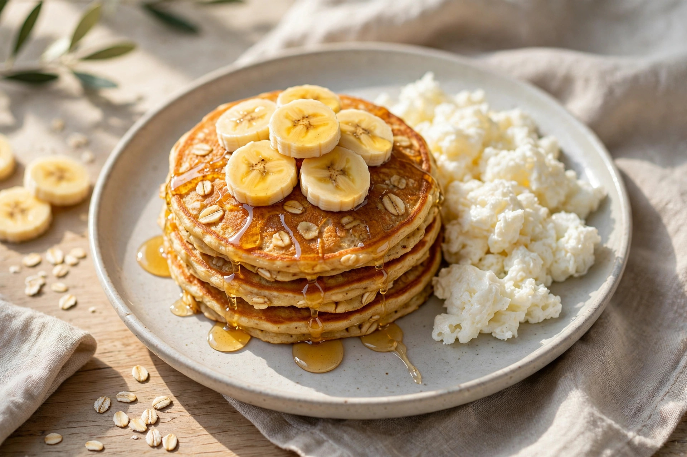

RONBO FIT · Recipes · Banana oat pancakes with scrambled egg whites
Banana oat pancakes with scrambled egg whites
Pancakes de avena y banana con claras revueltas
Recipe by Guillermo Villasmil · Receta de Guillermo Villasmil — RONBO FIT community

Illustrative photo of the finished dish · Foto ilustrativa del plato terminado
661KCAL
48.6 gPROTEIN
71.4 gCARBS
20.3 gFAT
15 min · 1 serving · Macros calculated from USDA data · Sugar 25.1 g
⚠️ Allergens / Alérgenos: egg
Ingredients
- 50 g Rolled oats (dry)
- 150 g Whole egg
- 118 g Banana
- 10 g Honey
- 200 g Egg white
- 2 g Olive oil
Ingredientes
- 50 g Avena en hojuelas (seca)
- 150 g Huevo entero
- 118 g Plátano / banana
- 10 g Miel
- 200 g Clara de huevo
- 2 g Aceite de oliva
Preparation
- Blend the oats with the 3 eggs, the banana and the honey until smooth.
- Heat a skillet with a little olive oil spray and cook the batter as pancakes, in batches, until golden.
- In the same skillet, scramble the 200 g of egg whites until set.
- Serve the pancakes with the scrambled egg whites on the side.
Preparación
- Licúa la avena con los 3 huevos, la banana y la miel hasta lograr una mezcla uniforme.
- Calienta un sartén con un poco de spray de aceite de oliva y cocina la mezcla como pancakes, por tandas, hasta dorar.
- En el mismo sartén, revuelve los 200 g de claras hasta que cuajen.
- Sirve los pancakes acompañados con las claras revueltas.
Get this recipe in the app
This recipe lives in the RONBO FIT recipe book — drop it into your weekly menu and the app does the math for your goals. · Esta receta vive en el recetario de RONBO FIT.